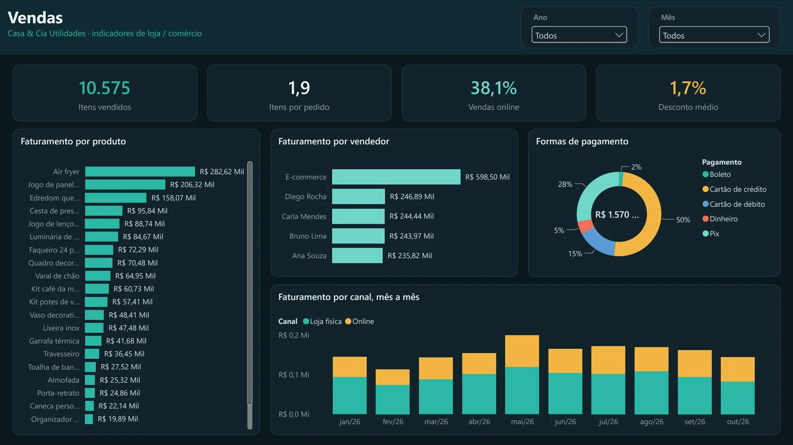
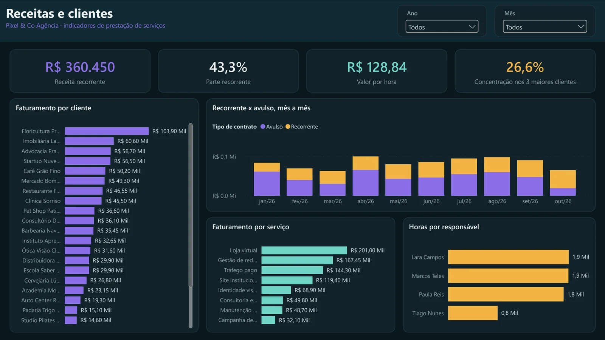
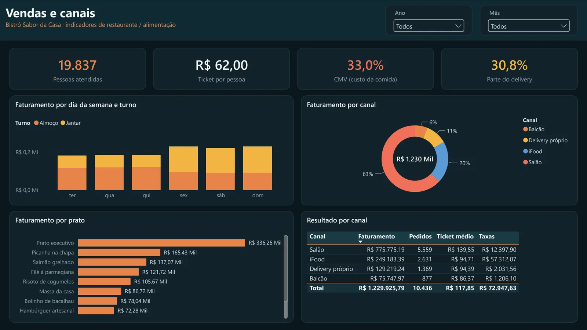
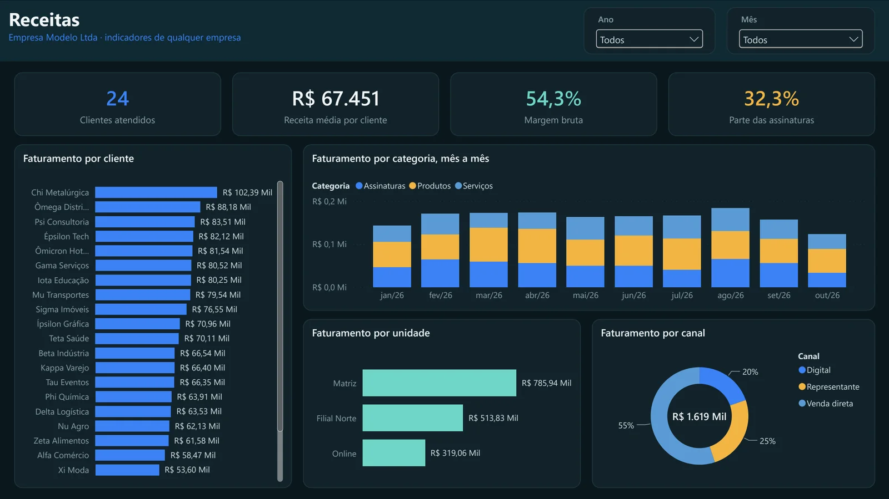
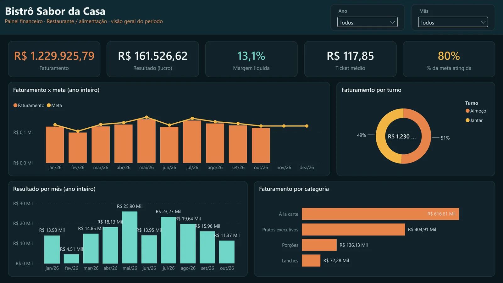

Visão geral
Faturamento, lucro, margem, ticket médio e quanto da meta do mês já foi atingido.
Quatro painéis prontos para pequenas empresas: você registra vendas, despesas e contas numa planilha do Excel, e o Power BI mostra faturamento, lucro, DRE mês a mês, caixa e o que está para vencer. Tem uma versão para loja, uma para prestação de serviços, uma para restaurante e uma para qualquer empresa.
Grátis. Cada versão vem com uma empresa fictícia e dados de exemplo de janeiro a outubro de 2026.

Faturamento, lucro, margem, ticket médio e quanto da meta do mês já foi atingido.
Os números de cada negócio: CMV e delivery no restaurante, receita recorrente nos serviços.
Do faturamento ao lucro: impostos, taxas de cartão, custo do que foi vendido e despesas.
Quanto precisa vender para empatar, com a margem de contribuição e as despesas fixas.
Saldo no fim de cada mês, entradas x saídas e o saldo previsto para daqui a 30 dias.
O que está em aberto, o que venceu e há quantos dias, agrupado por faixa de atraso.
Fixas x variáveis, por categoria e por centro de custo (a área que gastou).
Cada venda do período, com filtros por categoria, vendedor e cliente, pronta para exportar.

Produtos, vendedores, loja física x online, formas de pagamento, itens por pedido e desconto médio.

Clientes, contratos recorrentes x avulsos, valor por hora, horas por responsável e concentração de clientes.

Salão, balcão, iFood e delivery próprio, CMV, ticket por pessoa, pratos e movimento por dia e turno.

Versão genérica: clientes, unidades (matriz, filial, online), canais e assinaturas.
A versão completa traz a planilha, o relatório do Power BI e o guia de uso: extraia em C:\ e abra o Painel.pbip. Precisa do Power BI Desktop (gratuito, para Windows, na Microsoft Store).



Os quatro relatórios saem do mesmo script em Node.js, no formato de projeto do Power BI (PBIP): modelo de dados com calendário, relacionamentos e mais de 40 medidas DAX, cinco páginas e um tema escuro com a cor de cada segmento. Uma configuração por segmento troca o vocabulário, as colunas e a segunda página.
Os dados de exemplo são fictícios e gerados com semente fixa (sazonalidade, contratos que entram e saem, repasses semanais de aplicativo, clientes que atrasam), e as planilhas são montadas em Python. O guia de uso é uma página HTML convertida em PDF, com prints tirados do Power BI por automação.